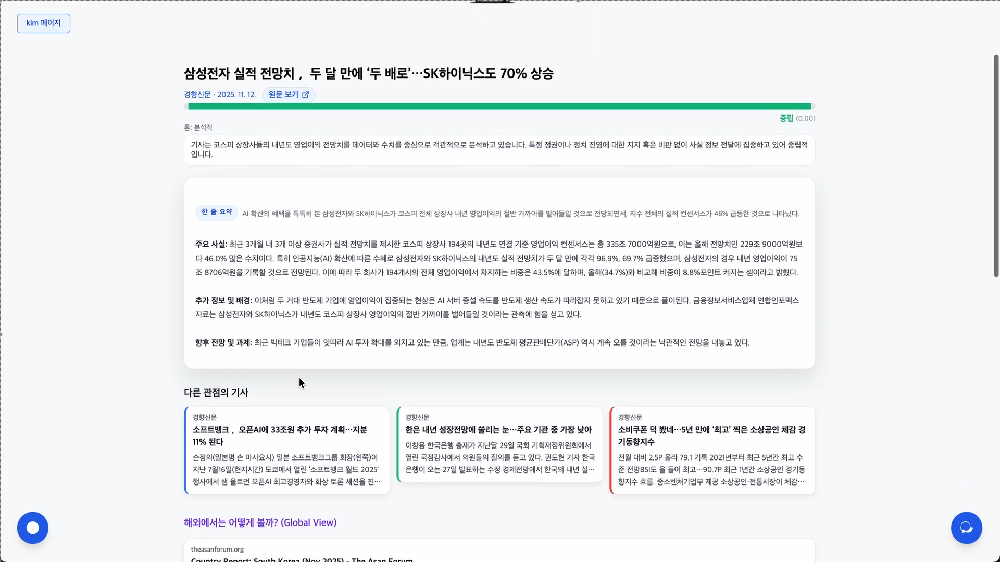
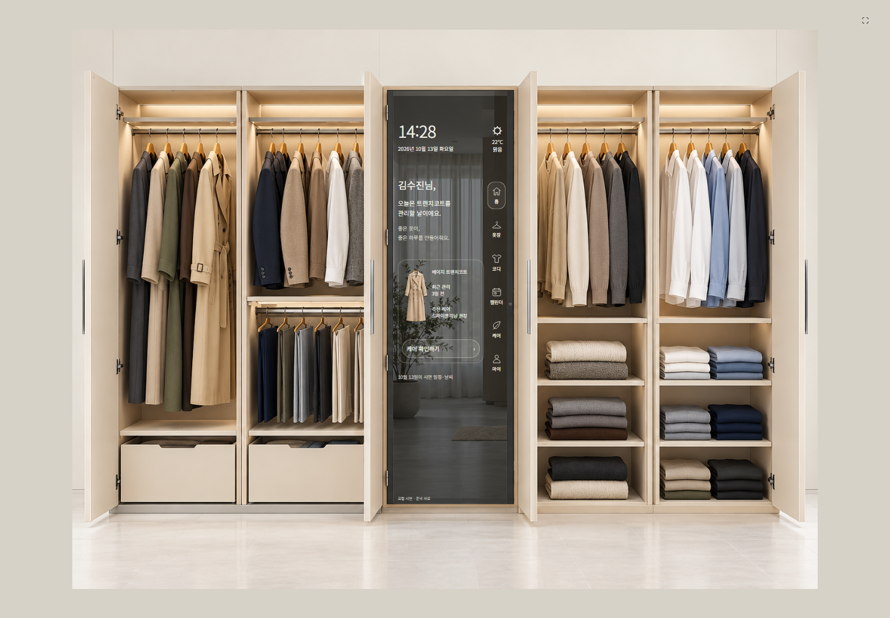

AI 엔지니어링 · 대표 프로젝트 01
News Bias Explorer
다관점 기사 검색을 위한 검색 전략 설계와 성능 최적화
같은 사건을 다르게 다룬 기사를 찾고 비교하기 위한 뉴스 분석 프로젝트입니다. 기사 수집과 검색, 요약을 연결해 다양한 관점을 탐색합니다.
- 키워드 검색과 임베딩 기반 검색을 활용한 관련 기사 탐색
- 기사 요약과 관점별 추천을 연결한 분석 흐름
- 검색 품질과 관점 분류의 타당성은 추가 평가가 필요
SELECTED WORK
AI/AX 엔지니어와 백엔드·FDE 성격의 개발 직무를 위한 프로젝트 기록입니다.
01 / FEATURED PROJECTS

AI 엔지니어링 · 대표 프로젝트 01
같은 사건을 다르게 다룬 기사를 찾고 비교하기 위한 뉴스 분석 프로젝트입니다. 기사 수집과 검색, 요약을 연결해 다양한 관점을 탐색합니다.

AX 시스템 설계 · 대표 프로젝트 02
의류의 위치와 상태를 디지털로 관리하고 상황에 맞는 추천과 보관 흐름을 연결하는 스마트 옷장 프로토타입입니다.
02 / MORE PROJECTS
프로젝트명과 실제 기능을 먼저 읽고, 선택한 항목의 화면을 확인합니다.
PREVIEW
03 / EXPERIENCE
상세 이력의 시각적 구성은 검토 중입니다.
04 / EDUCATION & AWARDS
상세 이력의 시각적 구성은 검토 중입니다.